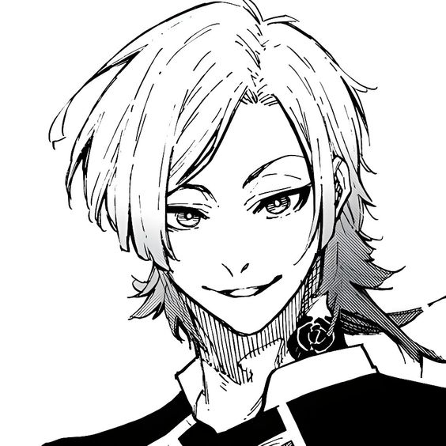
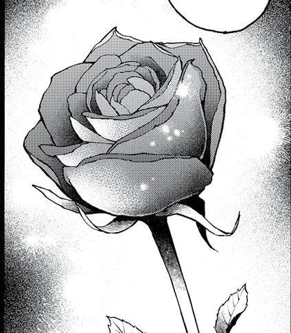
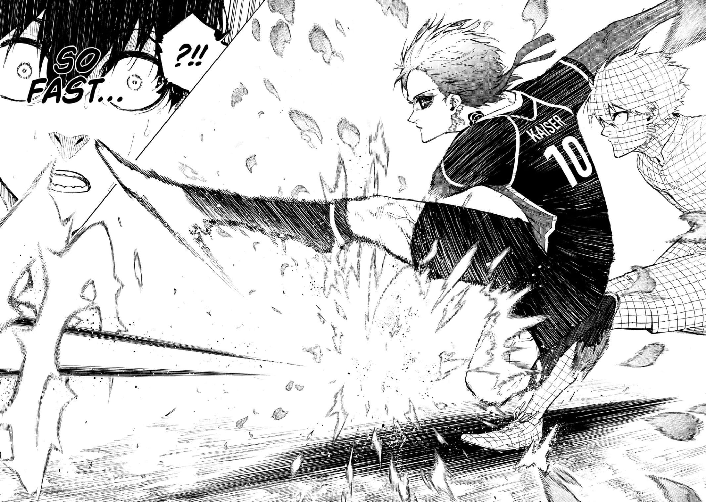
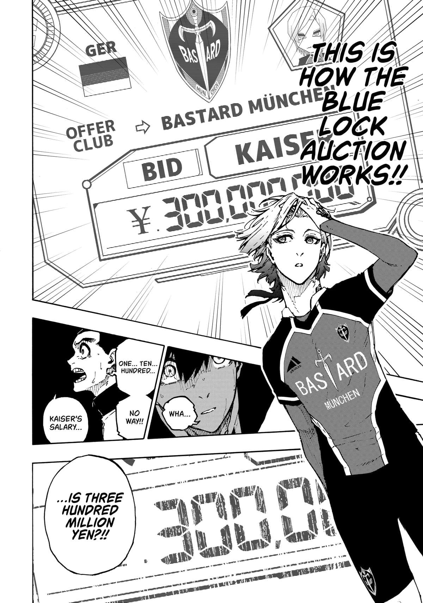
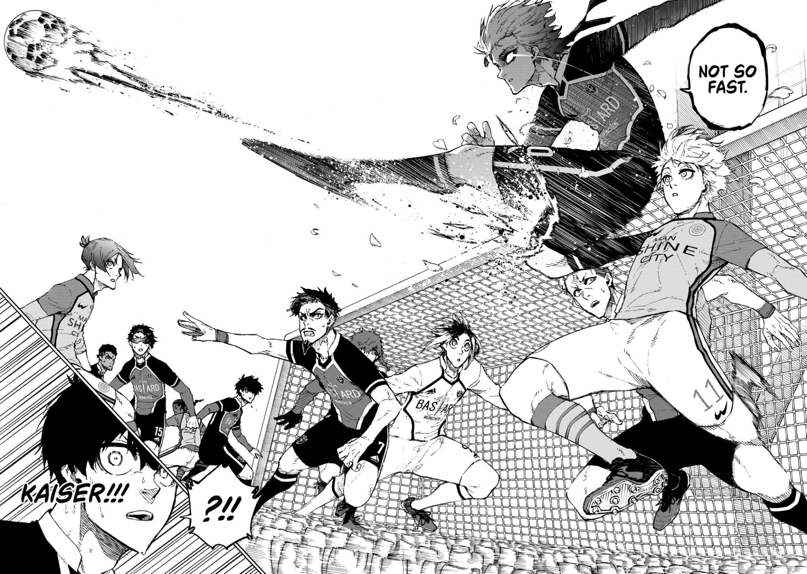
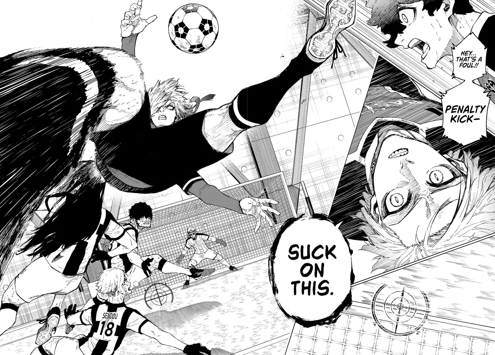
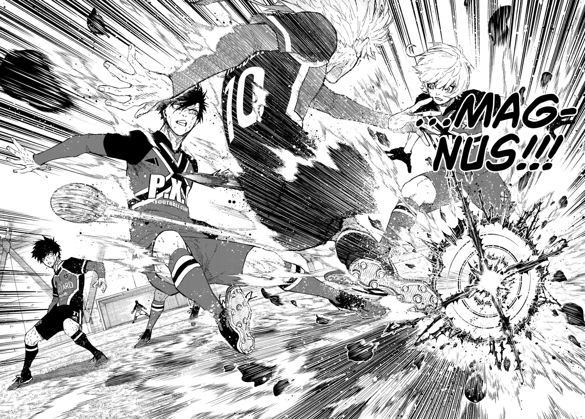

About Kaiser
Michael Kaiser is a prodigious U-20 forward from Germany and serves as the ace striker for the fictional football club 'Bastard München', a team inspired by Bayern Munich. He plays a pivotal role as one of the main antagonists in the 'Neo Egoist League' arc of the Blue Lock manga, significantly shaping Isagi Yoichi’s (the protagonist) development during this arc. Renowned as a football genius, Kaiser is a member of the New Generation World XI and widely recognized as one of the top U-20 players of his generation. Kaiser’s personality is marked by arrogance, conceit, and an overwhelming sense of superiority. He views everyone around him as mere background characters in his personal narrative, where he believes himself to be the star. While he displays arrogance and subtly belittles those he deems inferior, Kaiser knows how to check his attitude around those who are indisputably better than him - such as Noel Noa, the world's top striker and his team captain. Despite his inflated ego, Kaiser shows signs of an inferiority complex, as seen during his confrontation with Chris Prince, the world’s second-best striker, in the Manshine City (Manchester City) match. When Kaiser tried to avoid a direct 1v1 challenge with Prince, Prince provoked him by accusing Kaiser of acting superior to those beneath him while being a "differential coward" around those above him, even calling him "surprisingly pathetic." Clearly insulted by what Prince said, Kaiser responded by irrationally taking on the challenge. Additionally, Kaiser joined the Neo Egoist League in hopes of securing a better offer from another club and escaping Bastard München, a team he believes will always belong to Noa. Kaiser feels that no matter how hard he tries, he will never be able to surpass Noa or become the world’s best striker while at Bastard München. Kaiser’s philosophy is that once people deem something impossible, they are conditioned to give up. He despises those who trade their potential for “a mundane and safe existence”. In contrast to his current mindset, Kaiser once struggled with mental weakness, frequently giving up when faced with challenges he deemed impossible. To mark his determination never to return to that mentality, he had a blue rose tattooed on his neck, symbolizing his pursuit of the impossible. For him, the blue rose, with its unnatural hue not found in nature, represents turning the impossible into reality. Kaiser sees it as a personal emblem of becoming something extraordinary, something that shouldn't be possible in this world.
Best Moments
Blue Lock Chapter 162 Kaiser stunned everyone with his signature move, the ‘Kaiser Impact. This technique harnesses all his body’s leverage into his right leg, delivering a shot of unparalleled speed that even the world’s best striker, Noel Noa, admits is beyond his own capabilities. Kaiser meticulously positions himself to create a clear passing lane, while his teammate, Alexis Ness, maintains an optimal distance to facilitate any pass at a moment’s notice. With every movement calculated to perfection, Kaiser acts as both a decoy and a strategic anchor, holding his position to receive the ball and setting up for a decisive strike. Isagi Yoichi, witnessing the sheer brilliance of Kaiser’s play, is left in awe. He acknowledges that Kaiser’s movements embody the ideal play style he aspires to. As Kaiser navigates past defenders and readies himself for a goal, he surpasses Isagi’s analysis and predictions. In a jaw-dropping moment, Kaiser traps the ball and executes a shot with such speed and precision that the ball and his foot barely make contact. The shot is so swift and fluid that Isagi is unable to track the ball’s trajectory, underscoring the sheer dominance and brilliance of Kaiser’s technique. Kaiser’s goal stands out as a pivotal moment that highlights his exceptional talent and underscores the reasons behind his arrogance and titles. Scoring a spectacular goal, Kaiser demonstrates not only his technical prowess but also his strategic genius. The brilliance of his goal raises the stakes for Isagi, by illustrating the significant gap between him and elite players like Kaiser. It amplifies the narrative tension and accentuates the challenge Isagi faces in his journey. Moreover, this goal serves as a tangible testament to Kaiser’s arrogance, justifying his titles and self-assured demeanour.
Blue Lock Chapter 169 Kaiser’s annual salary of ¥300 million stands as a stark testament to the considerable gap between himself and the other players in the Blue Lock program, accentuating the immense challenge that Isagi Yoichi and his peers have to face in their journey to compete at the highest level. This figure dwarfs the salaries of most players, who, even at their best, earn less than half of what Kaiser makes. This substantial difference highlights not just Kaiser’s current standing in the football world but also the recognition and success he has achieved, which translate into his yearly salary. Even among his teammates, who are themselves elite players, Kaiser’s salary sets him apart, demonstrating the unique value and impact he brings to the field. His earnings reflect his exceptional skills, global reputation, and the substantial market demand for his talent. For Isagi and the other Blue Lock players, this financial gap serves as a powerful motivator, driving them to bridge the divide and prove themselves on par with such world-renowned players. The stark contrast in salaries embodies the high stakes of their competitive journey, fueling their determination to reach the pinnacle of football excellence and secure their place among the sport’s elite. Kaiser's salary not only reflects his skill but also the vast commercial appeal he holds. His status as a football prodigy and a key player in Bastard München makes him a sought-after figure for sponsorships, endorsements, and merchandise, further amplifying his value off the field. This financial success represents more than individual talent—it underscores how the football world values players who can not only perform at the highest level but also influence the sport's global market. For the Blue Lock players, this stark difference in financial rewards serves as a tangible reminder of the intense competition they face—not only to win games but to secure their futures in a highly competitive industry. The gap between Kaiser’s salary and theirs also symbolizes the divide between being a promising young player and becoming a fully-fledged football superstar. For Isagi, bridging this gap is not just about skill, but about ambition, perseverance, and proving his worth on the global stage.
Blue Lock Chapter 180 Kaiser demonstrates his versatility and showing that he’s a well-rounded player by stopping a crucial corner kick, a moment that highlights his all-around skill and tactical awareness. During the Manshine City corner kick, the entire Bastard Munchen team was anticipating for Agi's anticipated move, but they were caught off guard when Chigiri Hyoma executed a low trajectory pass. As Agi's flick pass set up Seishiro Nagi for a potential goal, Kaiser, displaying his world-class instincts, intercepted the ball mid-air with impeccable timing. Unfazed by Nagi's skill, Kaiser derided him as a “toddling little chick” and caused Nagi to falter during his jump. His ability to disrupt the opposing team’s set piece not only prevents a potential goal but also showcases his football intelligence, positioning, and versatility on the field. While known primarily for his offensive capabilities and powerful shot, the "Kaiser Impact," this scene emphasizes his ability to read the game and make decisive defensive plays. This play is significant because it underscores Kaiser's well-roundedness, proving that he is more than just a goal-scorer; he’s a complete player. Kaiser’s ability to stay composed and decisive under pressure, while others faltered, solidified his status as a world-class player and a pivotal rival in Isagi’s journey. The moment also serves as a reminder to his teammates and rivals, especially Isagi, of the considerable gap they still need to close. Kaiser's dominance in both attacking and defensive phases of the game reflects why he’s so highly regarded in the football world. It reinforces his confidence, and by stepping up in a crucial defensive moment, he demonstrates why his presence is invaluable to Bastard München.
Blue Lock Chapter 220 Kaiser, known for his offensive prowess, found himself closely marked by Don Lorenzo of Ubers (Juventus), another generation XI player renowned for his exceptional defensive skills. Lorenzo's relentless marking made it nearly impossible for Kaiser to get near the ball, highlighting his tenacity and defensive skills. Despite the intense pressure, Kaiser’s opportunity to score eventually arrived, showcasing why he is a feared and highly respected opponent. In a dramatic display of skill and resilience, Kaiser was tackled mid-air by Aryu Jyubei, with Shuto Sendou attempting to stop him from underneath. Even while being tackled in mid-air, Kaiser shocks everyone by executing a flawless bicycle kick, demonstrating his remarkable balance and technical ability. The challenge didn't end there; Oliver Aiku, another formidable defender known for his defensive prowess, was positioned directly in front of the goal. Yet, Kaiser managed to nutmeg Aiku, threading the ball through his legs while still airborne. This extraordinary sequence of events not only underscored Kaiser’s exceptional skill and composure under pressure but also reinforced why he is considered one of the most dangerous and respected players on the field.
Blue Lock Chapter 266 After suffering defeat to Isagi in the Ubers match, when he challenged him to see who can score more goals, Isagi scored two goals to his one. Kaiser was left immensely frustrated and consumed by thoughts of how to surpass his rival. He had underestimated Isagi's rapid evolution. Kaiser devised a new weapon inspired by the Magnus effect, aiming to add rotation to his signature "Kaiser Impact," which had previously relied on straight, forceful trajectories. Theoretically, this new shot was more powerful but required the ball to be perfectly positioned. When Isagi scored the first goal against PXG by imitating Noa’s ambidextrous skill after just weeks of practice, Kaiser became deeply worried. He feared Isagi’s growing abilities would take over the team, and everything he had worked for would be stolen. His first attempt at this new technique in a game ended in failure, marking the first time Kaiser had missed a goal, leaving him intensely frustrated. Realizing that staying within his comfort zone would never make him the world’s best, Kaiser knew he had to evolve. Determined, Kaiser adapted his movement patterns to be more anticipatory, considering the entire field and even starting to pass to players other than his trusted partner, Ness. With help from Kiyora Jin and some luck, Kaiser successfully pulled off his new Magnus shot, demonstrating his ability to grow under pressure. Isagi’s development not only challenged Kaiser but also forced him to push his limits and get off his high horse. Though already considered a world-class player, Kaiser's journey with Isagi proved that even he had room to evolve. Kaiser’s development underscores the complexity of his relationship with Isagi, where they serve as both rivals and unintentional motivators for each other. Although Kaiser initially viewed Isagi as inferior, dismissing him as someone beneath his level, Isagi’s relentless growth forced Kaiser to reevaluate his own approach. Each of Isagi’s breakthroughs—whether mastering new skills or scoring crucial goals—threatened Kaiser’s status, compelling him to adapt and evolve. This rivalry fueled Kaiser’s ambition, pushing him to create new techniques like the Magnus shot and adjust his gameplay. In this dynamic, both players drive each other forward, indirectly fostering each other's development and progression.
Backstory
Kaiser’s harsh upbringing, marked by poverty, abuse, and abandonment, played a critical role in shaping both his personality and life philosophy. Raised by an alcoholic, abusive father who constantly degraded him as "subhuman" and forced him to steal to survive, Kaiser grew up in an environment devoid of affection and stability. His mother, an actress who abandoned him as a baby, left an even deeper scar, solidifying his sense of worthlessness and fuelling a lifelong hunger for validation. His father kept and tended to a singular blue rose that Kaiser’s mother had given him, indicating that despite his abusive behavior and bitterness, he still harbored lingering feelings for her, clinging to a symbol of their past connection. These traumatic experiences pushed him to escape the dire circumstances of his youth.
As Kaiser grew older, his desire to escape his oppressive life intensified. On his 12th birthday, he decided to give himself a gift that would make him feel alive — a football. He saw himself in the ball; no matter how much he kicked or 'abused' it, it never retaliated, always returning to him, just like he did in life. However, Kaiser was falsely accused of a robbery at a nearby jewelry store, and police arrived to arrest him. His father, convinced Kaiser was hiding money inside the ball, tried to rip it open with a broken beer bottle. In that moment, something inside Kaiser was 'born'. He knocked out his father and the seven policemen that tried to arrest him with the football, all while handcuffed, and was sent to prison. His incredible feat caught the attention of PIFA agent Ray Dark, who personally visited Kaiser in prison to recruit him for a football team. This event marked the beginning of Kaiser’s rise to prominence.
Ray Dark enrolled Kaiser into the Bastard Munchen youth academy but had to pass the pro exam. It was during this trial that he met Alexis Ness, who was on the verge of giving up due to his struggles. Kaiser, sharing his philosophy of turning the impossible into a possibility, inspired Ness to push forward, and together, they dominated the exam, emerging as the only two to pass. Before meeting Ness, Kaiser alienated himself from others, viewing them as "wanted" humans, unlike him. He thrived on being the "target of malice," feeling most alive when destroying others' dreams and becoming the focus of their hate. Realizing that football required teamwork, Kaiser sought someone he could control, choosing Ness for his isolation and exceptional dribbling, passing, and creativity. Kaiser pretended to form a close bond with Ness, acting as his friend and equal—something Ness deeply craved due to his isolation and insecurity. Over time, he rationalized his father’s abuse as a means for his father to feel alive, shaping his own cruel approach to life and football.